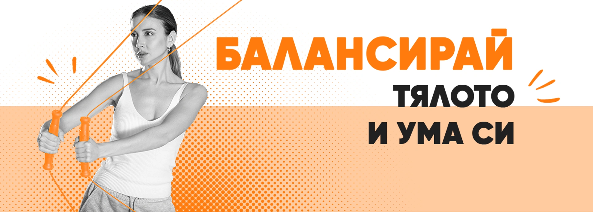
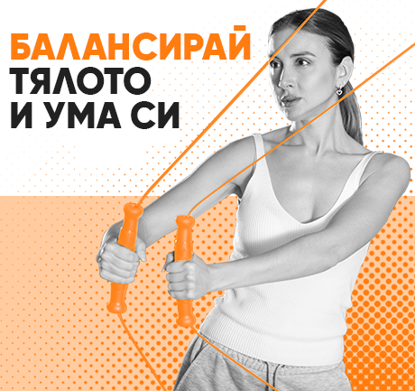
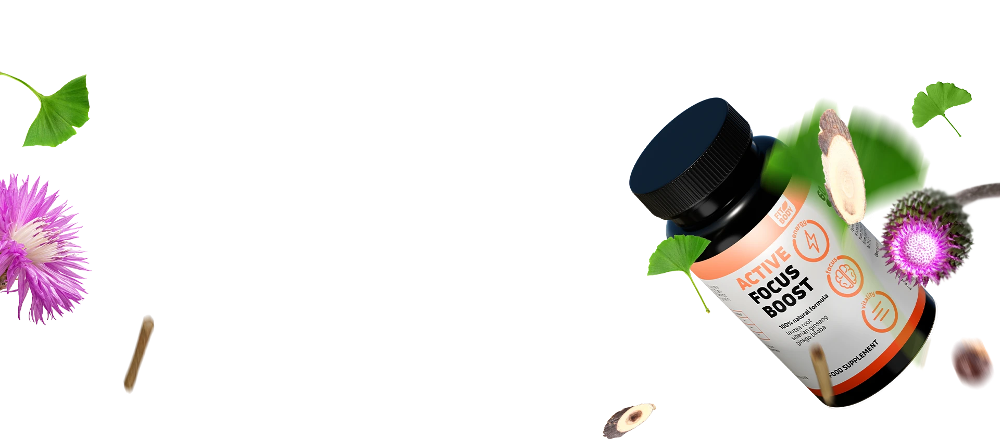
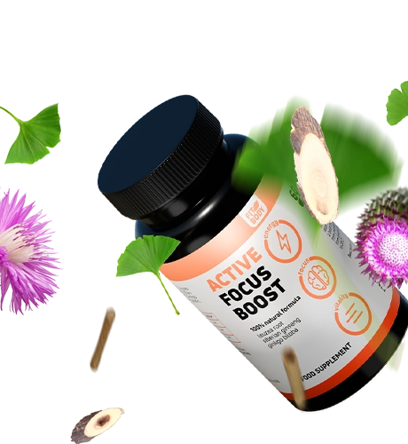
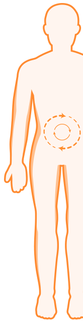
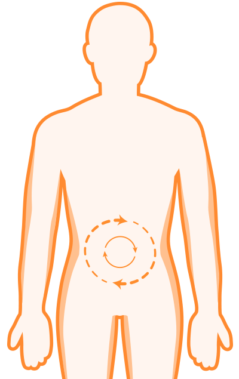

Формулата с натурален състав, включваща левзея екстракт, сибирски женшен и гинко билоба, осигурява ефективност без излишни химикали. Подходяща за всички възрасти, тя подкрепя когнитивните функции – от подобряване на концентрацията при студенти до подпомагане на паметта при възрастни. Тази билкова добавка за памет и концентрация е клинично тествана, гарантирайки безопасност и доказани резултати.


Левзея екстракт, известен още като "маралов корен", е натурално средство за повишаване на издръжливостта, енергията и концентрацията. Тази съставка е идеална за хора, които искат да се справят със стреса и умората, като същевременно запазят яснотата на ума.
Какво прави Active Focus Boost толкова ефективен?
Active Focus Boost съдържа подбрани съставки като гинко билоба и сибирски женшен, които подпомагат мозъчната функция и подобряват когнитивните способности. Тази комбинация стимулира оросяването на мозъка, като води до по-добра памет, по-бързо мислене и повишена концентрация.
Ако често се чувстваш изморен/а или липсва енергия, Active Focus Boost ще ти помогне да останеш активен/а и бодър/а през целия ден. Сибирският женшен, известен с адаптогенните си свойства, засилва издръжливостта и подпомага организма при физически и умствени натоварвания.
Гинко билоба, добре позната със своите ползи за паметта и концентрацията, стимулира кръвообращението и доставя повече кислород и хранителни вещества до мозъка. Това подобрява умствената яснота и способността за запаметяване.


[BEST SELLERS]
Приемай 2 капсули дневно с голяма чаша вода.
Най-добре е да го вземаш сутрин или преди активна умствена дейност.
Не превишавай препоръчителната дневна доза.
ПОВЕЧЕ ЕНЕРГИЯ, ПО-КАЧЕСТВЕН ЖИВОТ
Обикновен режим
Резултати с Active Focus Boost
88%
повече
Концентрация след 2 седмици прием
73%
по-малко
Умора след 3 седмици прием
64%
повече
Памет след 4 седмици прием
56%
повече
Продуктивност при продължителен прием
[RESULTRS CAROUSEL]
[FAQ]